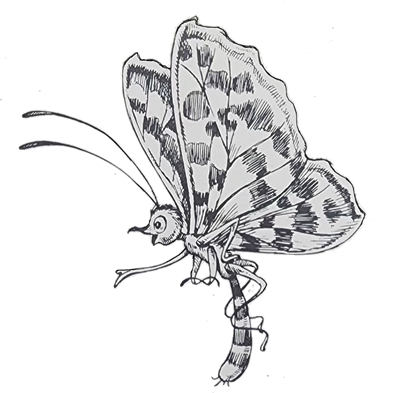
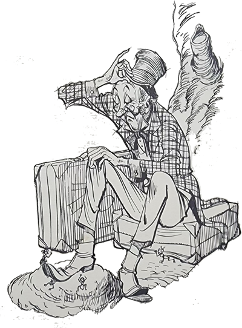

Numa linda tarde de calor, o Arrelia e as crianças estavam dando um passeio e encontraram uma grande árvore coberta de flores, em cujos ramos algumas aves cantavam alegremente. Pararam todos e ficaram de cabeça erguida admirando o maravilhoso quadro.
Encontravam-se completamente distraídos quando surgiu um homem carregando uma enorme e pesada mala. Vinha correndo desesperadamente como se estivesse sendo perseguido por uma onça. Ao chegar perto dos nossos amigos, largou a mala e agarrou-se ao Arrelia, gritando:
- Esconda-me! Por favor, esconda-me!

Apanhado assim de surpresa, o Arrelia exclamou:
- Mas o que é isso? Largue-me! O que está acontecendo? É um assalto?
Após muita luta, o homem libertou-o e, dando um forte suspiro, disse:
- Consegui! Ela passou e não me viu! Acho que estou salvo!
Se o Arrelia estava assustado, as crianças estavam apavoradas. Pouco a pouco, elas haviam-se colocado prudentemente do outro lado da árvore.
- Afinal, o senhor conseguiu o quê? Quem é que passou e não o viu? Por aqui não passou ninguém! – disse o Arrelia.
O estranho tirou um lenço de respeitável tamanho de um dos bolsos das calças e começou a enxugar o rosto coberto de suor. Era um tipo extravagante: usava terno azul muito vivo, gravata vermelha numa blusa amarela e sapatos brancos, o que fez Iberê comentar com as outras crianças:
- Puxa! Ele parece uma bandeira!
Depois de haver enxugado o rosto demoradamente, o homem disse ao Arrelia:
- Pois então não viu? Não percebeu aquela borboleta atrás de mim?
- Não vi borboleta nenhuma – respondeu o Arrelia. Não vá dizer que “estauva” fugindo de uma borboleta!
- Exatamente – confirmou o homem. E o senhor não faz ideia do quanto corri para conseguir livrar-me. Acho que corri mais de uma hora!
O Arrelia fez uma expressão para as crianças que queria dizer: “Esse é perigoso!”
- Então o senhor vinha fugindo de uma borboleta? – perguntou ele. Ela estava “armauda”?
- Está pensando que é brincadeira minha? – exclamou o outro, apanhando a mala. Pois não é. Conheci aquela borboleta no Paraíso dos Insetos e de lá é que estou chegando. Gostaria de contar o que me aconteceu, porém estou muito cansado. Conhece algum hotel nesta cidade? Depois contarei o que houve. O senhor não vai acreditar! Encontrei um lugar onde os insetos falam!
O Arrelia olhou novamente para as crianças e resolveu levar o recém-chegado para o hotel em que ele e as crianças estavam hospedados. O homem ficou lá e eles voltaram para continuar seu passeio.
- Esse é o mais “exageraudo” que já apareceu. Fugir de uma borboleta! Insetos que falam! E ele não estava brincando!
- Não deve ser muito certo da cabeça – comentou Carlinhos, olhando para trás a fim de certificar-se o estranho ficara mesmo no hotel.
Prosseguiram o passeio e toda a vez que encontravam uma borboleta o Arrelia brincava:
